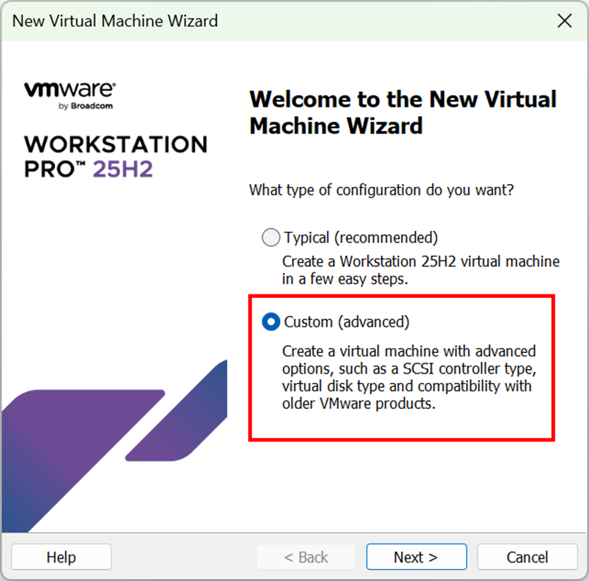
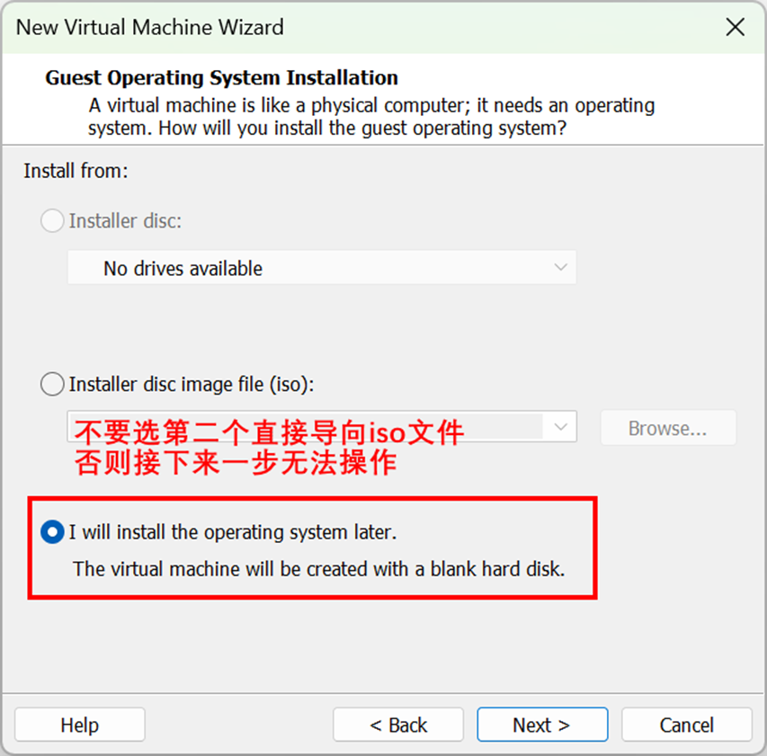
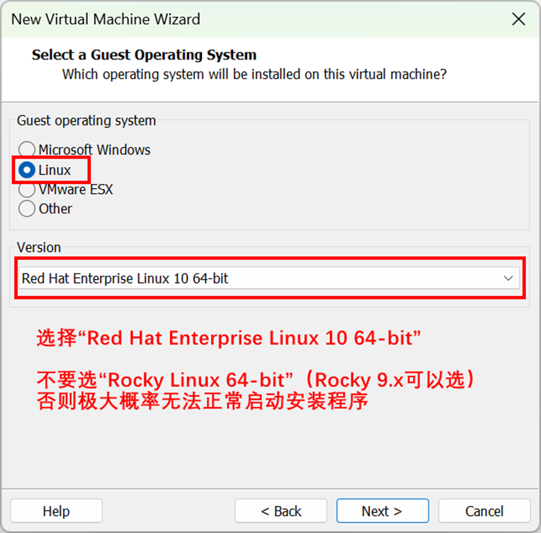
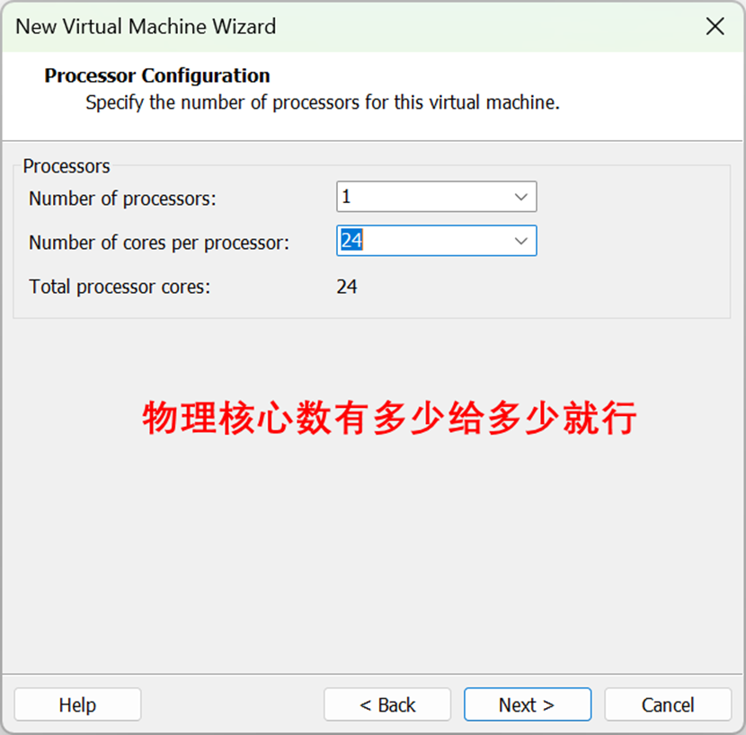
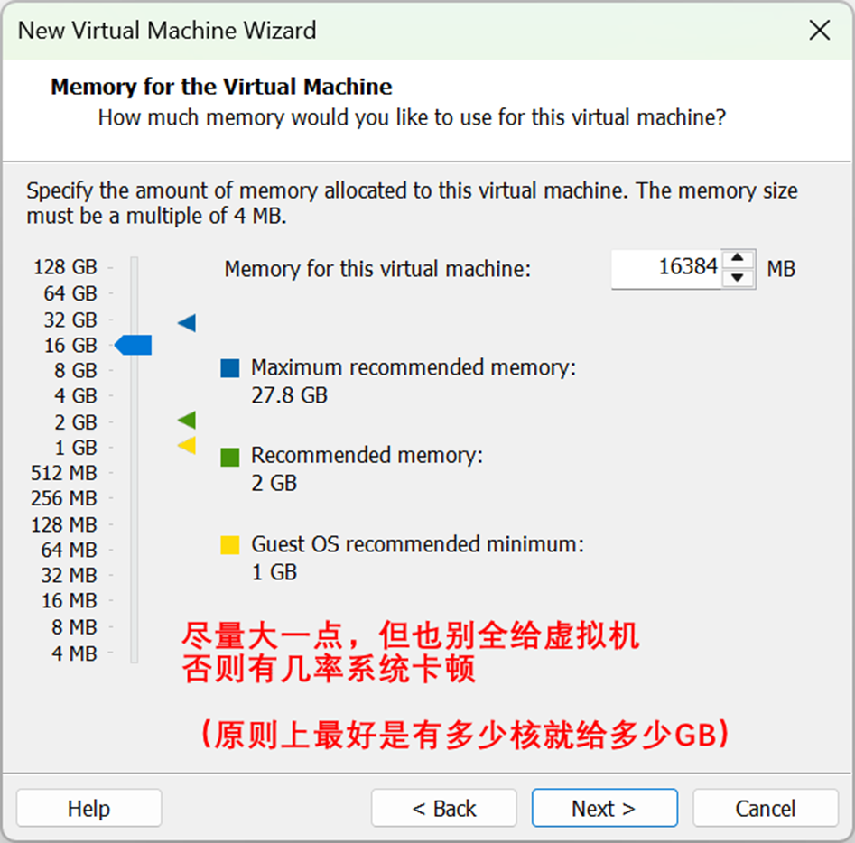
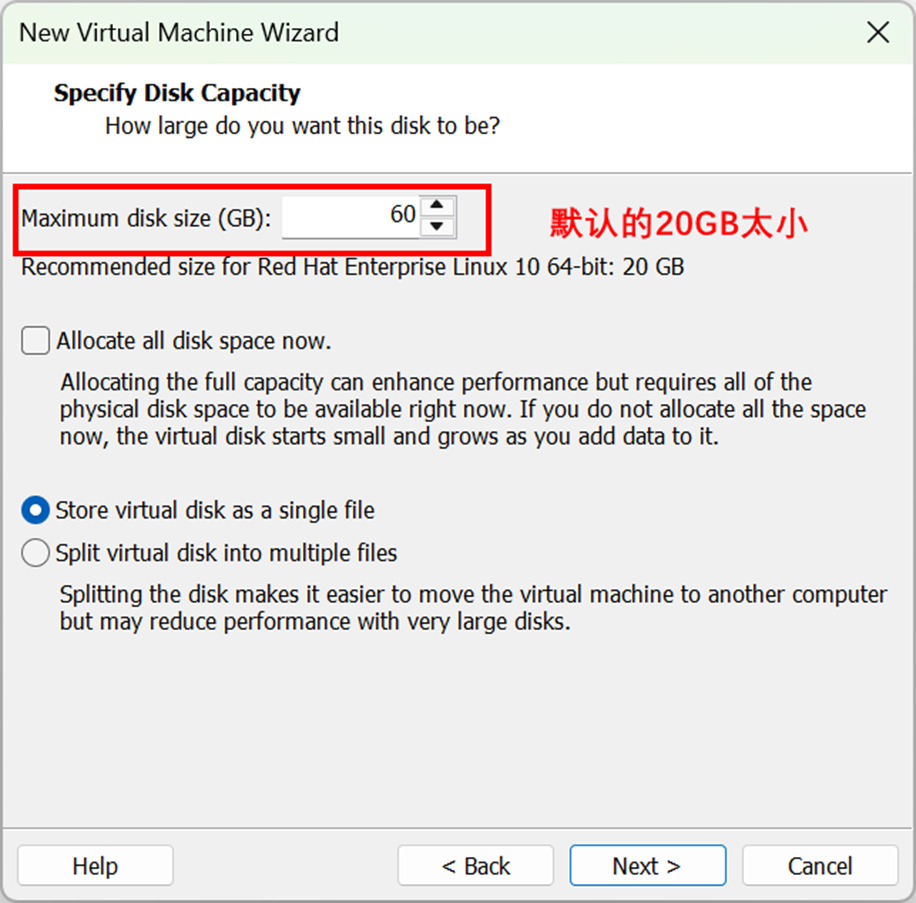
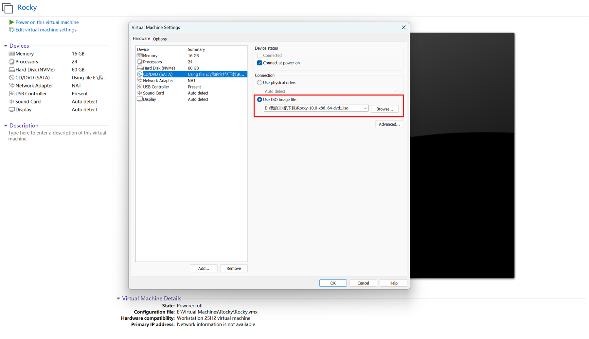

Rocky Linux 10在虚拟机上的安装
Last Updated: 2025-10-27
【写在前面：读这篇文章前吐血建议读者先认真看看我的“Rocky Linux的安装以及一些初步的使用建议”这篇文章，下面涉及的部分重复内容我已经在里写得很详细了，因此不再赘述，仅在有可能的不同点时加一些补充。那篇文章最后的“一些额外的使用建议”对虚拟机也一样适用。】
1. 下载Rocky Linux 10的ISO镜像
2. 安装VMware Workstation Pro
VMware Workstation Pro对个人用户是免费的，因此直接在Broadcom Support网站上注册用户，然后下载和安装VMware Workstation Pro就行了，只是过程稍微麻烦一些。目前软件最新版本为25H2，个人认为就Rocky Linux 10的安装和使用体验来讲相对17.x版有明显改进。
3. 配置VMware虚拟机选项
（1）进入VMware程序，点击“Create a New Virtual Machine”；
（2）依次按下图操作：（保留默认选项即可的页面没有给出）






（3）按下图所示，打开虚拟机设置，手动把CD/DVD驱动器链接到ISO文件。

4. 启动虚拟机，加载系统安装映像
5. 设置Rocky Linux安装选项
与Rocky Linux的安装以及一些初步的使用建议里面相应部分的说明可能的不同点在于，磁盘分区一步，如果分配给虚拟机的可用空间少，可以不设置swap分区以留出更多空间给主分区“/”用。
6. 一切就绪
点击“Begin Installation”开始安装。安装完毕后，点击“Reboot”，虚拟机会重启，重启后就自动进入Linux了。